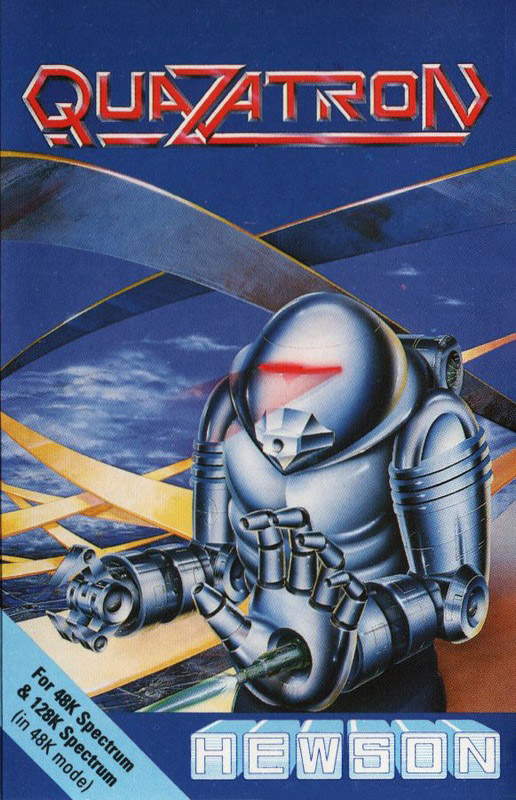
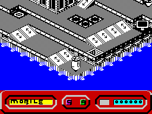
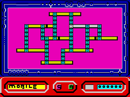
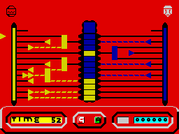
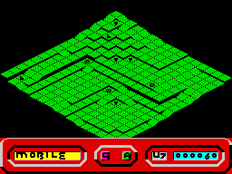

Quazatron


{kind=link}

| Publisher: | Hewson Consultants |
| Price: | £8.95 |
| Year: | 1986 |
| Source: | CRASH, Issue 29 |

The underground citadel of Quazatron is run by an evil cult of mutant droids, hell-bent on destroying the human race. Sob, whimper. But... do not despair, help is at hand in the form of KLP2, a psychotic Meknotech droid.
Klepto, as he is known, is a droid with A Past. In his youth he was exposed to a rare form of radiation which induced a type of droid madness. His persistent habit of dismantling everything mechanical in sight has landed him in serious trouble — he was expelled from droid school for demolishing his teacher. Despite painstaking re-programming, he remains a liability, but now he has a chance to prove his worth by eliminating the alien droids from the planet Quartech.

yellow city level
The droids patrolling the levels of Quazatron are pretty tough cookies, graded in security classes from one (very tough) to nine. They have some deadly weapons systems, and are virtually invincible — all previous attacks on the citadel failed. Now a new grappling system has been developed for droid-to-droid combat, and on account of his anti-social disposition Klepto has been chosen to test the prototype in a combat situation. He is expendable, after all!
At the start of the game Klepto is transported to the underground citadel of Quazatron. He must trundle about locating the enemy droids, dismantling them, pushing them off their programmed courses or blasting them to smithereens with his laser. Quazatron can be approached in two ways: on one level it is a shoot em up — destroy all the enemy droids and you win; but a wealth of strategical gameplay lurks below the surface. Whenever Klepto uses the prototype grappling system successfully, and overcomes an alien droid, his penchant for taking things to bits allows him to scavenge droid parts and upgrade himself.

that pops onto the display when
Klepto uses a lift
Klepto toddles up and down ramps looking for droids to scrap with. Ramming into a patrolling droid allows Klepto to use the grappling system, which breaks into the enemy droid’s circuits: the fight is on. The grapple system in the game has been adapted from Hewson’s Commodore game, Paradroid, and the aim is to win control of as many of the central bars on the grapple screen as you can.
Using pulsers which are fired into the circuits, you must turn at least seven of the twelve central bars on the screen to your colour to win — the more bars you control at the end of the time limit, the more resounding the victory and the less damage done to the alien droid’s systems. If the grapple is won, Klepto can help himself to his victim’s undamaged components — including the drive unit, weapon system, power unit, chassis and any other special devices that may be present. He’s a regular robotic carrion collector is Klepto.

the sub-game is to win as many
of the central colours over to your
side as you can in the few
seconds available
The lowest class of alien droid, Class 9, is relatively easy to outgrapple, but the goodies that can be scavenged from its hulk are not as attractive as those found on higher class droids. Care should be taken when choosing which parts to take from a vanquished opponent — it’s all very well pinching a super dooper weapon system for instance, but if Klepto has a wimpy power unit then it’ll rapidly be drained by the demands made on it by the new equipment.
Computer consoles scattered around the cityscape can be used to pick up information that comes in very handy when taking a strategic approach to the game. Trundling up to a terminal and pressing fire logs Klepto on to the system and calls up an icon menu from which a map of the current level of the city, a plan of the entire city and the droid data library can be called up. The data library displays Klepto’s current status, and lists the weapon, drive, power unit, chassis and devices currently installed. Details of the equipment to be found on enemy droids in the same or lower security classes as Klepto may be called up — vital for planning a rational upgrade path.

Klepto to call up a plan view of
the current city level
Travel between city levels is effected by moving Klepto onto a lift square set in the rampway and pressing fire — a plan view of the city comes onto the screen and Klepto can whizz up or down the lift shaft he is in. All this grappling and zooming round drains Klepto’s energy — and if his power unit is low-grade compared to the weapon systems or chassis that has been gained by grappling, then the power drain is all the more rapid. Klepto’s power unit can be recharged by moving onto power squares found on some levels, but points are lost for each recharge. As a power unit runs down, the amount of charge it can hold reduces. Eventually a new unit will have to be grappled from an alien if Klepto is to survive.
The city’s rampways are displayed in a scrolling window on the screen in 3D perspective. Klepto moves around the diagonals of the playing area, and can only fire his weapon system while he’s on the move and in weapon mode as opposed to grapple mode. Klepto’s energy status is revealed by the speed at which his head rotates — when he’s fully charged it whizzes round and a smile covers his countenance. As his power reserves dwindle, Klepto begins to look glum. Only one life is supplied in the game, so the aim is to keep Klepto smiling. Get grappling!
CRITICISM
“Quazatron owes a debt to the Commodore hit, Paradroid; though the graphics are very different, the lift sequence and grapple screen are almost identical. It’s generally a great game, that’s really fun to play and is instantly appealing. The only real complaint that I’ve got is that the scrolling routine when you move about could be a lot smoother, but as this doesn’t interfere with gameplay, it’s still one of the best games I’ve played on the Spectrum. If you have seen the Commodore game and liked it, I’d recommend you get Quazatron right now!”
“Quazatron is a true masterpiece. Nothing about it is of a bad standard — sound, graphics, playability and addictiveness, they’re all there. Basically, this is the C64 game Paradroid jazzed up a bit with pretty graphics and redesigned for the Spectrum. It is very easy to get into if you’ve played the Commodore game, but I suggest you study the instructions for a while if you haven’t, as they are complex and could be confusing. The graphics are about the best I’ve ever seen on this type of game: the characters are excellently drawn and full of detail, as is the city in its many levels. Graphically, my only nag is that the scrolling is too slow. The sound is excellent, with a brilliant tune on the title screen, and the effects during the game are second to none. I can’t really see myself putting this one down for a good while yet as it is fun to play and very compelling. I strongly recommend Quazatron to everyone.”
“Steve Turner has done a wonderful job of producing a Paradroid type game — I reckon this is one of the best games ever to come out on the Spectrum. Playability is superb: the game’ll keep you at the computer for ages wondering how you’re going to kill the next droid that comes along. The levels are very detailed and contain lots of baddies to short circuit. The grapple mode is very good and needs lots of patience and skill to play. The character you control is very well animated and there are lots of nice touches to the game. The sound at the start is a very good two channel simulation. Addictive qualities are enhanced by the fact that it is quite easy to finish one level, but a different matter altogether to go around and clear the whole city. This is definitely one game that will keep you at your Spectrum for months.”
COMMENTS
| Control keys: | A, S, D, F, G left and up, H, J, K, L right and up, B, N, M, SYM SHIFT left and down, Z, X, C, V, CAPS SHIFT right and down, ENTER to fire, W to toggle autofire, P to pause |
| Joystick: | Kempston, Cursor, Interface |
| Keyboard play: | Straightforward and responsive |
| Use of colour: | Attractive |
| Graphics: | Detailed, with cunning 3D but a little slow to scroll |
| Sound: | First rate |
| Skill levels: | One |
| Screens: | Multilevel scrolling city |
| General rating: | An excellent game |
| Use of computer: | 94% |
| Graphics: | 93% |
| Playability: | 93% |
| Getting started: | 89% |
| Addictive qualities: | 93% |
| Value for money: | 93% |
| Overall: | 94% |